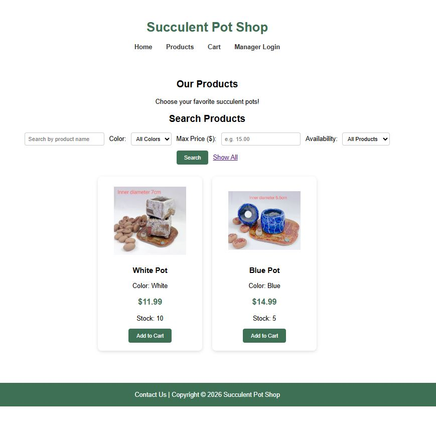
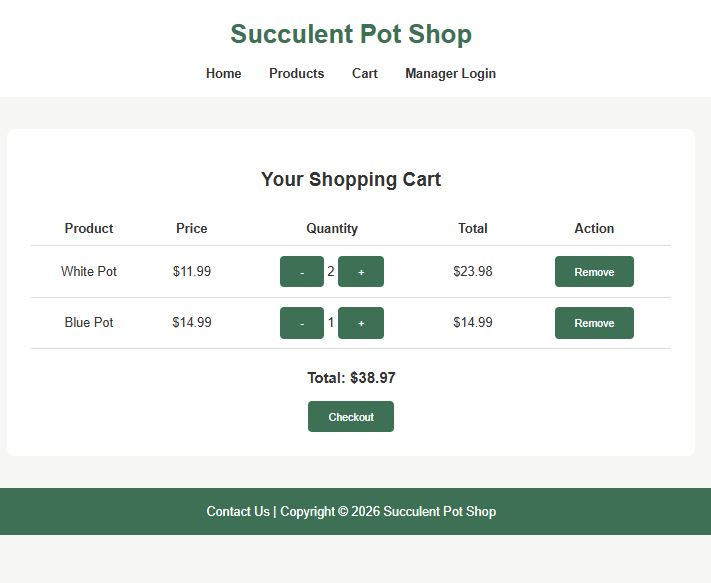

PROJECT 02 / JAVA COURSEWORK
Succulent Pot Shop
An online shop connecting product discovery, shopping carts, orders, and inventory.


01 / THE PURPOSE
What I wanted to build
Let customers browse succulent pots and place orders, while staff manage products and order status.
02 / KEY FEATURES
What the application does
- Browse, search, filter, and paginate products
- Update quantities or remove cart items
- Submit checkout details and create an order
- Manage inventory and order statuses through an admin session
03 / DEVELOPMENT
Connecting the workflow
I built the customer shopping flow and the administrator workflow around products, orders, and order items. Connecting order changes to stock updates helped me understand how application layers work together.
- Browse the catalogue
- Add pots to the cart
- Review quantities
- Complete checkout
04 / REFLECTION
What comes next
Instructor feedback identified password security, CSRF protection, flexible image management, and documented test evidence as areas to improve. Payment options were coursework demonstrations rather than a production payment service.